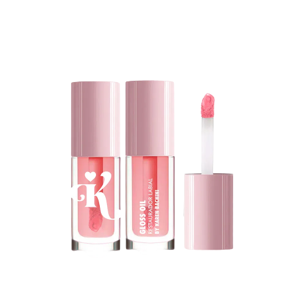
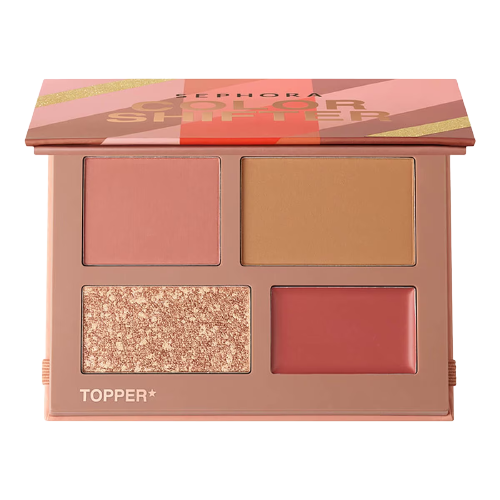

Produtos

BASE NARS NATURAL RADIANT LONGWEAR FOUNDATION 30ML
R$ 339,00 ou 10x de R$ 33,90
Sua pele aperfeiçoada. Sem parecer marcarada. NARS apresenta Natural Radiant Longwear Foundation. 16 horas de fixação, cobertura construível de média a alta intensidade e acabamento natural e confortável. Disponível em 15 cores para todos os tons de pele.

FENTY BEAUTY PRO FILT'R INSTANT RETOUCH CONCEALER (CORRETIVO DE OLHOS)
R$ 185,00 ou 5x de R$ 21,60
Um corretivo líquido cremoso, de longa duração e que não acumula nas linhas de expressão, com cobertura média a alta e leve como o ar, que ilumina a região abaixo dos olhos e disfarça manchas e vermelhidões.
Este corretivo é a solução de alta cobertura para viver a vida ao máximo.
Com fórmula resistente ao suor, ele contém a incrível variedade de 50 tonalidades funcionais e com efeito matte suave, cada uma projetada para combinar com a cor da sua base Pro Filt’r.

PÓ SOLTO FACIAL BRUNA TAVARES BT SKIN
R$ 59,00 ou 2x de R$ 29,50
O BT SKINPOWDER é um pó solto com fórmula exclusiva, contém pó micronizado super fino, pigmentos tratados, Vitamina E e Rice Silk, uma seda de arroz que ajuda na absorção da oleosidade e proporciona um delicioso toque sedoso para a pele. Com acabamento aveludado, matifica, fixa e sela a maquiagem do rosto sem deixar a pele com a aparência pesada.

PALETA SOMBRAS FRAN BY FRANCINY EHLKE NINE ESSENTIALS
R$ 99,90
Essa paleta reúne cores e acabamentos que farão você se apaixonar. NINE ESSENTIALS FRAN By Franciny Ehlke traz cores essenciais para uma bela maquiagem, mistura texturas para que você use cada uma delas quando desejar. Acabamentos super mate, brilhantes e efeito-látex. Fórmula fina, fácil de aplicar, sua textura parece cremosa de tão macia.
Porque amamos? 9 tons essenciais, com acabamentos diversos, altíssima pigmentação e longa duração.

GLOSS OIL MERCÚRIO RESTAURADOR LABIAL BY KAREN BACHINI
R$ 45,90
O Gloss Oil MERCÚRIO é um restaurador labial que, além de hidratar e restaurar os lábios, vai deixá-los com um super brilho. Possui na sua formulação ácido hialurônico, óleo de semente de uva, vitamina E e pantenol, que, juntos, possuem benefícios nutritivos, antioxidantes e super hidratantes. Esse produto une tratamento cosmético labial com um brilho de gloss luxuoso que a gente ama.

PALETA DE ROSTO SEPHORA COLLECTION COLOR SHIFTER FACE
R$ 129,00 ou 6x de R$ 21,50
A mini-paleta de rosto Color Shifter contém o segredo para uma pele bonita, com fórmulas fáceis de usar e de aplicar e que proporcionam cores intensas e maximizadas. Suas fórmulas em creme e pó esculpem o rosto e realçam seus traços e podem ser combinados com um topper cintilante para desbloquear uma gama infinita de looks.